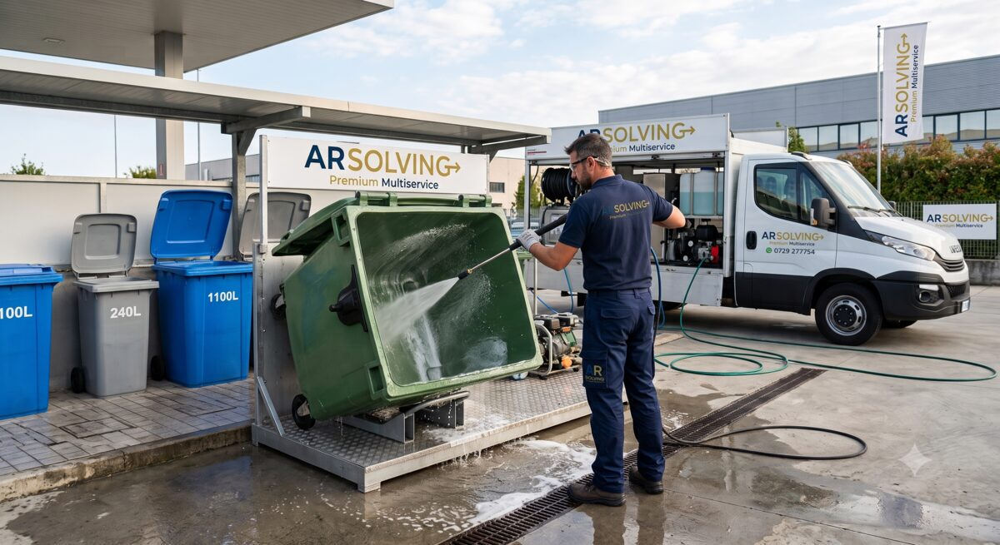

I bidoni dell'organico lavorano ogni giorno, e si sente. Li igienizziamo e sanifichiamo direttamente davanti al tuo locale, con un sistema a base di enzimi a ciclo chiuso: niente odori, niente residui su marciapiede o dehors, nessun disagio per i clienti.

Addio odori e insetti
Gli enzimi degradano i residui organici ed eliminano germi, larve e cattivi odori alla fonte, dove i lavaggi con sola acqua non arrivano.
L'immagine del locale, prima di tutto
Area rifiuti pulita e in ordine anche dove passa la clientela. Il ciclo chiuso recupera l'acqua di lavaggio: non resta nulla a terra.
Igiene documentata
Prodotti naturali e biodegradabili, sicuri per persone e ambiente. Procedure tracciate, a supporto delle buone pratiche igieniche della tua attività.
Frequenza su misura
Lavaggi settimanali o quindicinali negli orari più comodi per il servizio. Non serve la tua presenza: basta che i bidoni siano accessibili.
Piccolo formato
Grande formato
Lavaggio ad alta pressione + sanificazione di pavimento, pareti e contenitori
Per lavaggi periodici e attività prepariamo un preventivo dedicato con tariffe agevolate.